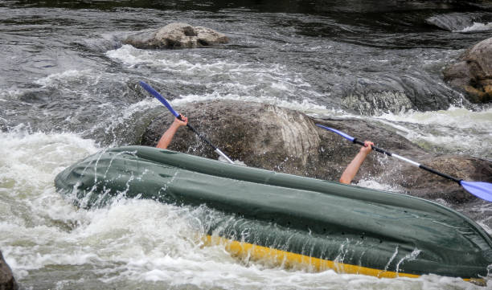

Dangers of Whitewater Rafting
Injuries from collisions, banging, brushing, and smacking against rocks are far more common than death in whitewater rafting. This can happen while you are on the raft. When the raft hits a boulder, you can get thrown out and hit your head. Also, keep an eye on the paddles swinging in the water.

Statistics
Fortunately, fatalities are uncommon in this activity, with rafting fatalities occurring at a rate of 2.9 per 100000 user days.
Injury rates for rafting are 0.26 to 2.1 per 100000 boating days. Acute rafting injuries are more often due to contact with another rafter's paddle or other equipment; the next most common injury is the rafter hitting an object while "swimming."